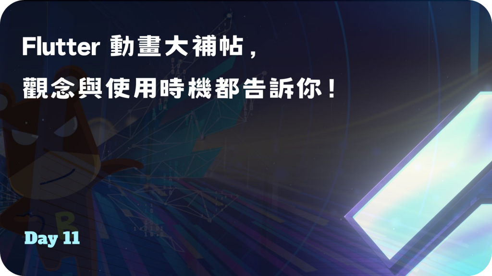
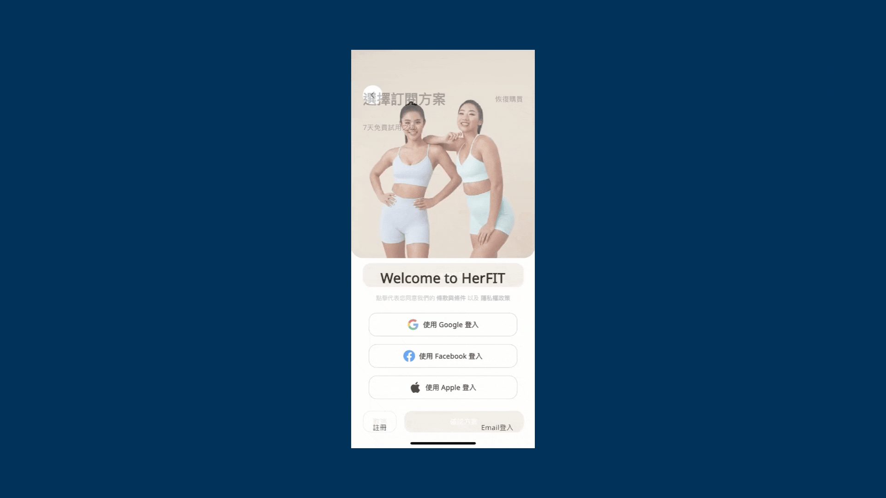
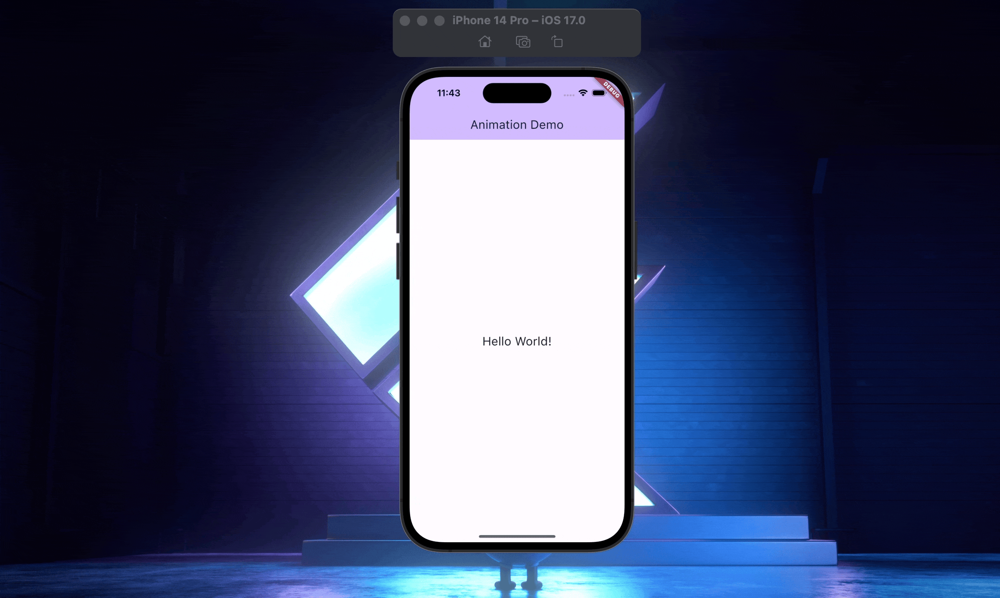
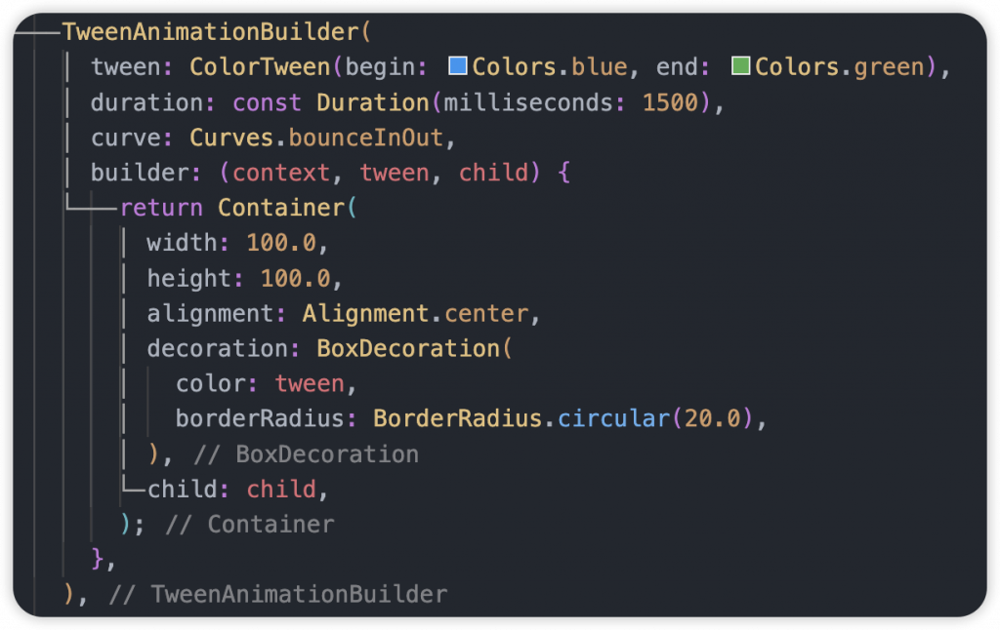
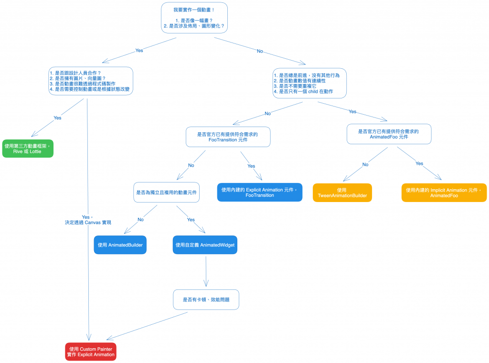
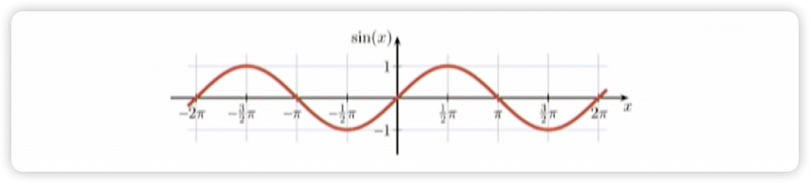

Day 11: Flutter 動畫大補帖，觀念與使用時機都告訴你！
- 發布時間：2023-09-26 15:56:24
- 原文連結：https://ithelp.ithome.com.tw/articles/10328634
- 系列標記：探索 Flutter 由裡到外，三十天帶你前往進階系列 第 11 篇

在 Flutter 中，動畫在大部分開發情境下不太常使用到，很多產品都以功能為導向，有時候有趣的體驗或是酷炫的效果都會被忽略甚至是排在後面，視為往後優化的部分，所以大部分實際遇到需要動畫的情況也不多，就我了解，大部分開發者除了自身興趣外應該都對它沒有很熟悉。所以藉這個機會跟大家分享一些撰寫動畫的重點，也包含一些實作經驗與範例，希望能讓你更熟悉它。
主要動畫的分類可以分成兩種來識別，一種是 Explicit Animation 顯式動畫和 Implicit Animation 隱式動畫，在不一樣的情境下有不一樣的選擇，實現的方式有很多種，如何高效的去使用才是重點。這時侯我想大家看這兩個分類應該還是很難懂我在說什麼，沒關係，跟著我繼續往下吧！
顯示動畫 (Explicit Animation)
- 製作顯示動畫的第一要素，就是需要一個
AnimationController，透過它我們才能完全的控制動畫，包括設置運行時間長度，會用到 Duration、開始動畫能設置初始點、反轉動畫、停止動畫等等，搭配 Tween 補間差值，能做到任何的效果呈現 - 在每一幀刷新，
AnimationController都會產生一個對應的數值，讓元件根據數值進行顯示上的變化。而當不使用 Tween 時(後面會提到)，就是線性的依次產生一個 0-1 的數值 - 使用時需要搭配
AnimatedBuilder來進行元件的更新，務必使用它包裹 Widget Tree，才能無縫的在每幀進行刷新。切記不要用setState()，雖然一樣能完成動畫效果，但實際上它無法渲染訊號同步，一旦有多個動畫要執行，或是牽扯到的範圍很大，很可能會造成卡頓 - 如果基本的動畫元件無法滿足需求時，可以透過
AnimatedWidget或AnimatedBuilder實作動畫效果。我們可以自定義某個複用的效果元件，並以 XxxTransition 此規則來命名，必備參數為AnimationController，通常只要看到 Transition 為後綴的元件都是顯示動畫，算是大家的共識 - 動畫的運動類型分成兩種
- Tween Animation → 屬性值的變化區間，Tween 就是 Between 的簡寫，所以它的參數會有
begin和end可以設置 - Physics Animation → 類似Tween，只不過它的變化區間是根據物理引擎計算出來的，更加模擬真實的效果。在開發中會使用到 Simulation 相關類別去實作
- Tween Animation → 屬性值的變化區間，Tween 就是 Between 的簡寫，所以它的參數會有
使用時機與情境
可以根據特性來判斷是否使用它來實作
- 動畫會重複
- 動畫不連貫、不順暢
- 多個相關元件一起執行動畫
補充：實作時可以透過 child 參數設置不被動畫影響的元件，避免重複創建、提高效能，而最好的方式還是用
constWidget，節省記憶體使用
相關動畫元件
| 元件 | 說明 |
|---|---|
| AlignTransition | 對齊動畫 |
| DecoratedBox | 裝飾動畫 |
| DefaultTextStyle | 文字風格動畫 |
| Fade | 淡入淡出動畫 |
| Positioned | 位置動畫 |
| RelativePositioned | 相對位置動畫 |
| Rotation | 旋轉動畫 |
| Scale | 大小倍率動畫 |
| Size | 尺寸動畫 |
| Slide | 滑動動畫 |
| StatusTransitionWidget | 狀態改變元件 |
隱式動畫 (Implicit Animation)
- 隱式就是顯示動畫的相反，使用上不需要使用
AnimationController，相對簡單許多，使用起來很快速、便利，只需要運行的時間長度 Duration，然後設定改變的目標值，它就能幫你做完所有事情。不過就無法控制動畫 - 有一貫的命名方式，通常一般以 AnimatedXxx 為規則來命名，這點一樣需要記下來。不過 AnimatedIcon 為例外，它其實是 Explicit Animation
- Flutter 本身提供很多樣的隱式動畫 Widget，例如：AnimatedContainer、AnimatedIcon、AnimatedAlign 等等，下方我會列出來
使用時機與情境
- 沒有符合顯示動畫的條件時
相關動畫元件
| 元件 | 說明 |
|---|---|
| AnimatedAlign | 對齊動畫 |
| AnimatedContainer | 綜合動畫，更改支援的所有屬性都會有動畫效果 |
| AnimatedCrossFade | 針對兩個元件執行交換的 Fade 動畫效果 |
| AnimatedDefaultTextStyle | 文字動畫 |
| AnimatedOpacity | 透明度動畫 |
| AnimatedPhysicalModel | 陰影動畫 |
| AnimatedTheme | 主題風格動畫 |
| AnimatedSize | 大小尺寸動畫 |
| AnimatedPadding | Padding動畫 |
| AnimatedRotation | 旋轉動畫 |
| AnimatedSwitcher | 元件漸變動畫，跟 AnimatedCrossFade 類似 |
| AnimatedScale | 動畫版本的 Transform.scale，影響大小 |
| AnimatedSlide | 滑動動畫 |
| AnimatedPositioned | 位置動畫 |
| AnimatedPositionedDirectional | 位置方向動畫 |

動畫控制器 (AnimationController)
- 製作顯式動畫時，都會需要 AnimationController 來管理和控制動畫，可以根據 APP、頁面狀態去操作動畫，給予不一樣的效果。而我們在使用時，通常會在元件的 State with
SingleTickerProviderStateMixin並在創建 AnimationController 的時候設置vsync參數為 this，緊接著就能開始製作動畫了 - 大部分時候我們只需一個 AnimationController，搭配
SingleTickerProviderStateMixin，顧名思義它就是適合一個 AnimationController 的情境。如果需要多個 AnimationController 來管理多個動畫，可以選用TickerProviderStateMixin，同時管理多個 Ticker 實體與每幀更新同步
詳細動畫的刷新過程跟源碼分析可以閱讀下一篇文章，分享了細節，這邊就不深入探討了。
Day 12: 研究 Flutter 動畫，背後的 vsync 跟 Ticker 有多重要？
SingleTickerProviderMixin
- 適合 State 裡面只有一個 AnimationController，使用
vsync創建一個 TickerProvider
TickerProviderMixin
- 適合 State 裡面需要多個 AnimationController 同時使用，使用到多個 TickerProvider
補間 (Tween)
- Between 代名詞，擁有開始(begin)和結束(end)兩個參數，動畫的數值變化只會在這個區間更動，內容可以是任何類型，例如：int、double、Offset、String、Color、Matrix4 等等
- 普遍的使用方式
Tween<T>，使用泛型放置你期望的型別，當然也可以使用特定類型的 Tween 類去替代，下方有幫大家條列了 - 與 AnimationController 搭配，它負責管理 Tween，使用
animate()生成Animation物件
可使用種類
| 類型 | 說明 |
|---|---|
| IntTween | 數值變化 |
| StepTween | 使用 double 刪除小數值返回整數部分 |
| ColorTween | 顏色變化 |
| SizeTween | 大小變化 |
| BoxConstraintsTween | 約束變化 |
| DecorationTween | 裝飾變化，例如：BoxDecoration、ShapeDecoration |
| EdgeInsetsTween | EdgeInsets變化，可搭配 Padding 使用 |
| Matrix4Tween | 矩陣變化 |
| TextStyleTween | 文字風格變化 |
| FractionalOffsetTween | 小數變化 |
| MaterialPointArcTween | 圓弧變化 |
| RectTween | 矩形變化，使用 null 代表 Rect.zero |
| AlignmentTween | 對齊變化 |
| ConstantTween | 常數變化 |
產生核心 Animation
實現動畫的核心類，根據 Tween 生成更新的區間數值，而元件根據數值的更新來重繪，產生動畫效果
// 1.
Animation animation = _animationController.drive(
Tween<Offset>(
begin: const Offset(0, 0),
end: const Offset(100, 200),
),
);
// 2.
Animation animation = Tween<Offset>(
begin: const Offset(0, 0),
end: const Offset(100, 200),
).animate(_animationController);
串連 Chain the Tweens
- 可以將多個 Tween 進行組合，簡單的連結它們，例如：給 Tween 添加 Curve 曲線。有時候Tween 很難描述一個複雜動畫，這個時候就需要進行疊加了
Animation animation = Tween(
begin: 0,
end: 50,
)
.chain(
CurveTween(curve: Curves.easeIn),
)
.animate(animation);
自定義 Tween
- 繼承
Tween自定義特殊情境的差值，任何類型的改變，都可以作為Tween - 根據動畫的時間進度參數
t進行處理和計算，讓結果不同
以下範例，實作出文字陸續出現的效果，就像打字機一樣：
class TypingTween extends Tween<String> {
TypingTween({
String begin = '',
String? end,
}) : super(
begin: begin,
end: end,
);
@override
String lerp(double t) {
final endStringLength = end?.length ?? 0;
final cutPosition = (endStringLength * t).round();
final displayedText = end?.substring(0, cutPosition) ?? '';
return displayedText;
}
}

Curve
- 曲線本身是一個數學函數 f(x)，控制動畫在時間上變化的速度，行進的曲線。預設動畫以線性方式動作，而它能讓動畫變的更加自然、真實，避免生硬的動畫過程，例如讓行進從慢速開始然後加速
- 在動畫中，過程被稱為插值器(interpolator)，
Curves提供了很多不同類型的選擇，覆蓋了大部分的使用場景，例如：Curves.easeIn、Curves.bounceInOut、Curves.fastOutSlowIn，總共 38 種，詳細可以到官方文件上了解
可使用種類(38種)
Curves.easeIn → 動畫從慢速開始然後加速
Curves.easeInOut → 動畫從慢速開始，加速，然後減速
… 詳細可查看官方文件，有呈現所有的運動效果
CurvedAnimation
- 根據曲線(Curve)來生成非線性的區間值，可以讓動畫更自然，根據幾種運動方式去運行，比較不會讓人感覺古板
- 很多情況下，動畫的發生速率是變化的，例如：加速、減速
- 甚至能設定這個 Animation 在整體動畫的兩個指定時間點出現，使用
Interval實作。第一個參數為開始，第二個參數為結束，設定 0-1，例如：可以設定時間長度在 0.25 開始執行動畫
Animation animation = Tween<Offset>(begin: const Offset(0, 0), end: const Offset(100, 200)).animate(_animationController);
// 1.
animation = CurvedAnimation(parent: _animationController, curve: Cureves.easeInOut)
// 2.
Animation animation2 = CurvedAnimation(
parent: _animationController,
curve: const Interval(0, .6, curve: Curves.fastOutSlowIn),
);
AnimatedBuilder
- 只要是顯示動畫都會需要用到 AnimatedBuilder，跟
AnimationController搭配使用，精準的進行畫面重繪 - 參數
child→ 設置不需要更新、變化的元件，不會因為動畫執行而重複創建和浪費資源，更好的是幫元件加上 const，確保編譯時就創建確定builder(context, child)→ 可以直接拿child來用，它就是我們賦予不會被影響的部分，外面包裹需要動畫更新的元件
再提醒一次，切記盡量不要使用
addListener()和setState()進行動畫刷新，尤其是擁有一個 Long widget tree，會降低 APP 性能


AnimatedWidget(Custom Animation Widget)
- 如果
build()的 Widget Tree 變得腫大且難閱讀時，可以將動畫部分獨立出來一個新的 Widget。這時候很適合使用自定義的 AnimatedWidget，將 AnimatedBuilder 包成 Widget，除了可讀性高之外，以後也可以複用，不需要重寫相同效果，可以實作一個自己的動畫元件集合 - 屬於顯示動畫，需要
Listenable作為參數，AnimationController、Animation 都是它的子類，根據命名規則，通常會以 xxxTransition 的命名方式 - 建議暴露一個
child參數作為性能優化，可以提前創建不被影響

TweenAnimationBuilder
- 實際上也是 Implicit Animation 隱式動畫，類似 AnimatedBuilder 但是不需要 AnimationController 的幫助
- 一樣設置 Tween，固定的 Tween 可以使用
static final聲明，節省記憶體消耗 - 適合情境
- 動畫不符合 Explicit Animation 條件
- 不需要 AnimationController 掌控動畫
- 需要 Curve 來呈現跳耀、非線性過程
TweenAnimationBuilder(
tween: ColorTween(begin: Colors.blue, end: Colors.green),
duration: const Duration(milliseconds: 1500),
curve: Curves.bounceInOut,
builder: (context, tween, child) {
return Container(
width: 100.0,
height: 100.0,
alignment: Alignment.center,
decoration: BoxDecoration(
color: tween,
borderRadius: BorderRadius.circular(20.0),
),
child: child,
);
},
)

動畫的選擇
以下是在實際開發場景中，我們如何針對動畫的需求條件來決定要使用哪種方式來實現。(此圖參考 Emily Fortura 製作中文版本)

補充
注意
- 列表元件在實作時需考慮到緩存範圍，因為會優先繪製可視區域外的一些元件，可能在還沒滾動到它們時，動畫就已經結束了，使用者會看不到效果
技巧
- 實作動畫經常搭配的元素
- Stack
- Positioned
- Transform
- 觀察動畫，歸納出我們看到的效果，例如：重疊、變小、位移、更換元件，分解之後再接著一步一步實作它們
- 了解三角函數對畫東西、做動畫有幫助。例如：當數值一下負一下正，數值來回移動，可以判斷為三角函數的
sin(value)，數值越長頻率越高，越小波形越平緩

撰寫有關時間的測試
- 使用
clock套件，透過模擬的時間，在測試環節可快速跳過並驗證。不需要使用 Future 和 Datetime 耗費真實時間
本文說明了動畫的核心幾部分，希望有讓大家了解在什麼情境下要選擇什麼實作方式，通常一種動畫效果可以有很多種方式來完成它，但我們可以挑相對快速且方便的作法，根據動畫的作動、行為、可操作性來判斷。如果都不夠你用的話，那我們就使用 Canvas 自己畫吧，有興趣的朋友跟我說，會在出其他文章來討論。
動畫除了是一個效果、一個產品需求之外，它同時也是提升使用者體驗的重要元素，當市面上產品的呈現方式都差不多時，可以想想是否能讓自家產品脫穎而出，但凡事過多都會造成反效果，所以規劃、嘗試很重要，適當才能夠畫龍點睛。思考一下，讓 APP 擁有自己的特點吧！